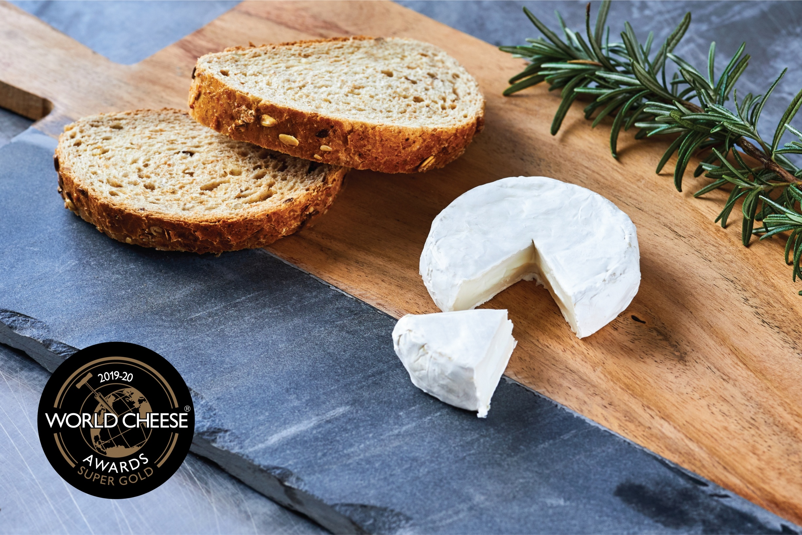

A kecsketejből hasonlóan készül a sajt, mint a tehéntejből. A langyos tejbe teszik az oltót, amely a friss tej sajtanyagát savanyodás nélkül alvasztja meg. Kis idő múltán májszerű állaga lesz, ekkor apró darabokra vágják, forróra melegítik és egy ideig állni hagyják. Ezután leszűrik az összeállt alvadékot, ízesítik, sózzák, sajtkultúrával beoltják, majd (előbb gyakran, majd ritkábban) forgatva formába préselik. Néhány nap és sózás után pincében érlelik. Az alvadék szűrése után maradt savó bőven tartalmaz még fehérjéket. Alkalmas házi sertés táplálására, de ordát (zsendicét) is készítenek belőle.
Az általában 40-45 százalékos zsírtartalmú kecskesajt meglehetősen tömény. Íze igen markáns, ezért csak kevés kell belőle. A kecskesajtot főleg kis üzemekben, manufaktúrákban, jellemzően kézzel készítik. Ez hazánkra és Nyugat-Európára is érvényes. A legnagyobb hagyománya Franciaországban van a kecskesajtnak, de fogyasztják a görögök, a spanyolok, az osztrákok, a németek, a hollandok, az angolok is. Sokszor keverik juh- és tehéntejjel. A franciák chevre-nek (ejtsd: sevr) hívják.
Krémsajttal keverve, fűszerezve kenhetjük kenyérre. Picit meggrillezve salátával is kitűnő. Ránthatjuk, panírozhatjuk, keverhetjük burgonyával, zöldségekkel, valamint felfújtakhoz is nagyon finom. Isteni körtével, fügével, eperrel, sárgadinnyével.A franciák hidegen is eszik, de elterjedt a chevre chaud (ejtsd: sevre só), a meleg kecskesajt, bagettel vagy panírozva, baconben megsütve.
